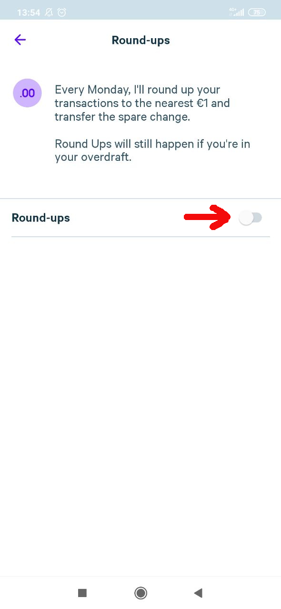
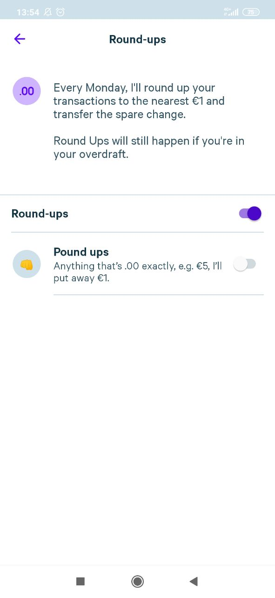

Enabling a Saver
First click on the "Brain" Button on your Homescreen
Next choose the saver you wish to enable. For this tutorial we choose the "Round-ups" Saver

Finally flip the toggle to enable the saver

Voila! 🎉